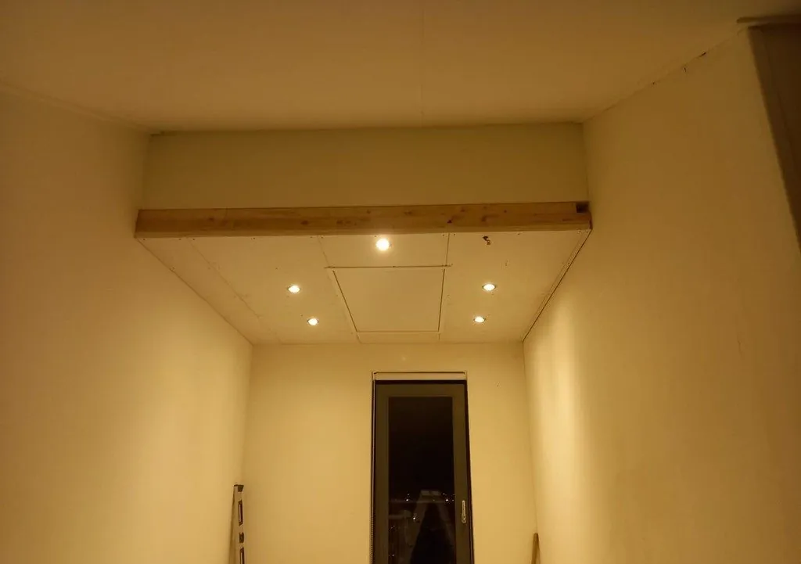
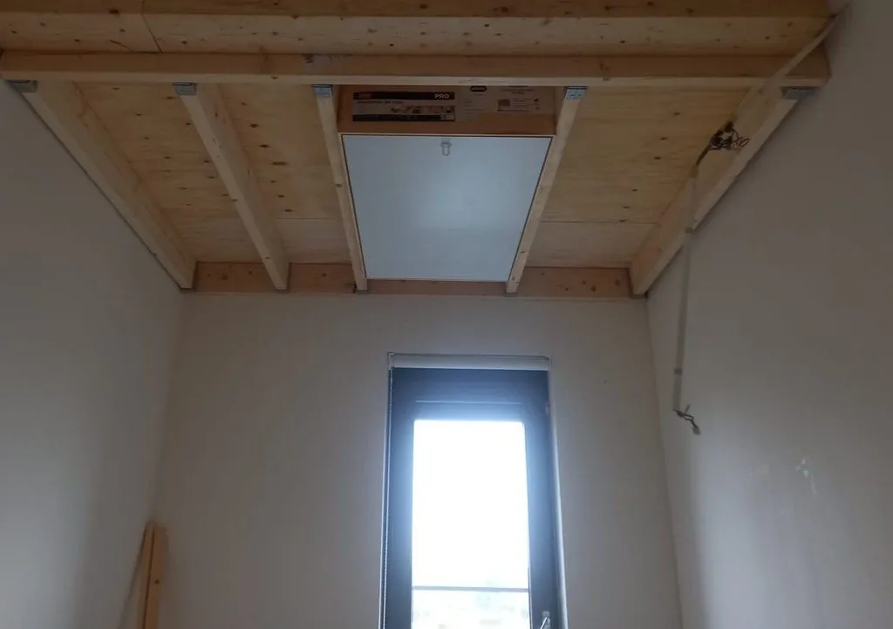
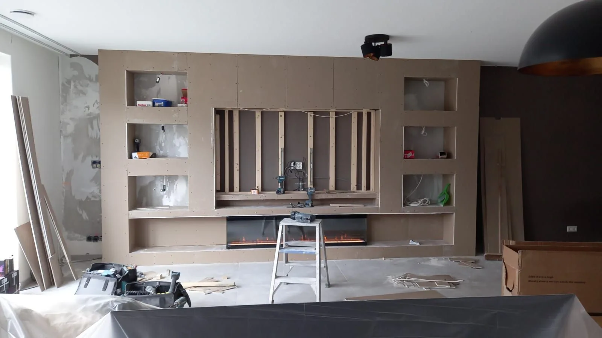

Van ruwbouw tot de laatste lijst.
Verlaagde plafonds, wanden, doorbraken, kozijnen en de afwerking die alles af maakt. Van het regelwerk tot de laatste plint blijft alles in één hand — zodat alles op elkaar aansluit.
 Geschreven door Ozcan, eigenaar van OK Timmerwerken
Geschreven door Ozcan, eigenaar van OK Timmerwerken

Van kale balklaag tot strak plafond.
Hetzelfde plafond, voor en na. Het regelwerk, het vlieringluik, de inbouwspots en de afwerking: alles door OK Timmerwerken.
Sleep de lijn om te vergelijken


Echte projecten van OK.
Foto's van klussen die OK Timmerwerken heeft uitgevoerd. Blader met de pijlen of kies een foto in de rij eronder.

Tv-wand met nissen in opbouw
Alles rond timmerwerk & afbouw, in één hand.
01Plafond verlagen
Een verlaagd plafond maakt een hoge ruimte intiemer en biedt ruimte voor leidingen, spots, airco of ventilatie. De minimale opbouw is maar enkele centimeters. We zetten strak regelwerk, isoleren waar nodig en werken het plafond glad af.
02Wanden plaatsen
Met een nieuwe wand maakt u extra ruimtes, bijvoorbeeld een kamer op zolder. We werken met metal studs (stabieler en rechter dan hout), gipsplaten, gasbeton of mdf — en volgen een vast stappenplan: positie bepalen, liggers plaatsen, platen vastzetten en afwerken.
03Deuren & kozijnen plaatsen
Nieuwe deuren en kozijnen verbeteren de uitstraling én de isolatie van uw woning: oude, slecht sluitende exemplaren laten veel warmte ontsnappen. We adviseren vrijblijvend over vervangen en plaatsen ze vakkundig.
04Aftimmerwerk
Aftimmeren is het netjes afwerken van ruwe aansluitingen na timmerwerk — bijvoorbeeld rond een nieuw (verlaagd) plafond, kozijnen of leidingen. Het is gedetailleerd maatwerk waarbij vakmanschap het verschil maakt.
05Koven maken
Een koof is een strakke ombouw op de overgang van muur en plafond om leidingen, gordijnrails of verlichting weg te werken. Met indirecte verlichting erin geeft een koof de ruimte direct meer sfeer.
06Gevelbetimmering & gevelbekleding
De gevel bepaalt de uitstraling van uw woning en beschermt hem tegen weer en wind. We betimmeren en bekleden gevels in onder meer lariks, red cedar en douglas — nieuw, of ter vervanging van beschadigde of verouderde bekleding.
07Doorbraken
Een muur eruit voor een open ruimte: we plaatsen de stalen balk volgens de berekening van de constructeur en werken alles daarna netjes af.
In drie stappen klaar.
Plan & indeling
We bespreken wat er moet gebeuren en in welke volgorde, zodat het werk logisch op elkaar aansluit.
Ruwbouw
Sloopwerk, doorbraken, regelwerk en wanden — de basis staat strak en waterpas.
Afbouw
Platen, stuc- of schilderklare afwerking, kozijnen en plinten: klaar om in te wonen.
Klaar voor stap 1?
Bel, app of mail Ozcan. Binnen een dag hoort u van ons.
Goed om te weten.
Kunnen jullie een dragende muur verwijderen?
Ja. We plaatsen een stalen balk volgens de berekening van de constructeur, verwijderen de muur en werken alles netjes af.
Doen jullie ook het stucwerk?
We leveren schilder- of stucklaar op en kunnen het stucwerk voor u regelen, zodat u één aanspreekpunt houdt.
Kan ik tijdens de verbouwing thuis blijven wonen?
Vaak wel. We stemmen de planning met u af en houden de werkplek zo schoon mogelijk.
Wat kost het, en waar hangt de prijs van af?
Dat hangt af van de omvang, de opbouw en de bereikbaarheid. Ozcan komt vrijblijvend langs, kijkt ter plaatse wat er nodig is en u krijgt daarna een duidelijke prijs op papier.
Werken jullie ook bij mij in de buurt?
OK Timmerwerken werkt vanuit Gorinchem, door heel Nederland. Vertel waar de klus is, dan horen we binnen een dag van ons.
Vraag vrijblijvend advies aan.
Vertel kort wat u van plan bent. Ozcan reageert binnen een dag en komt graag langs om het ter plaatse te bekijken.
Andere diensten.
 machinaal gevlinderd
machinaal gevlinderdBetonvloeren
Een vlakke, gladde vloer die jaren meegaat.

 van zolder tot kamer
van zolder tot kamerVliering & zolder
Een hele verdieping erbij.
 op maat in hout
op maat in houtCarport & overkapping
Maatwerk dat uw buitenruimte afmaakt.
 erkend montagepartner
erkend montagepartnerDakramen (Velux)
Meer licht, altijd waterdicht.

 degelijk voorbereid
degelijk voorbereidFunderingen
Het fundament onder al het werk.
 tegel voor tegel
tegel voor tegelOnderhoud & renovatie
Uw woning weer in topconditie.
 vanaf de eerste balk
vanaf de eerste balkNieuwbouw
Vakwerk vanaf de eerste balk.
Alle diensten
Alle werkzaamheden op een rij.